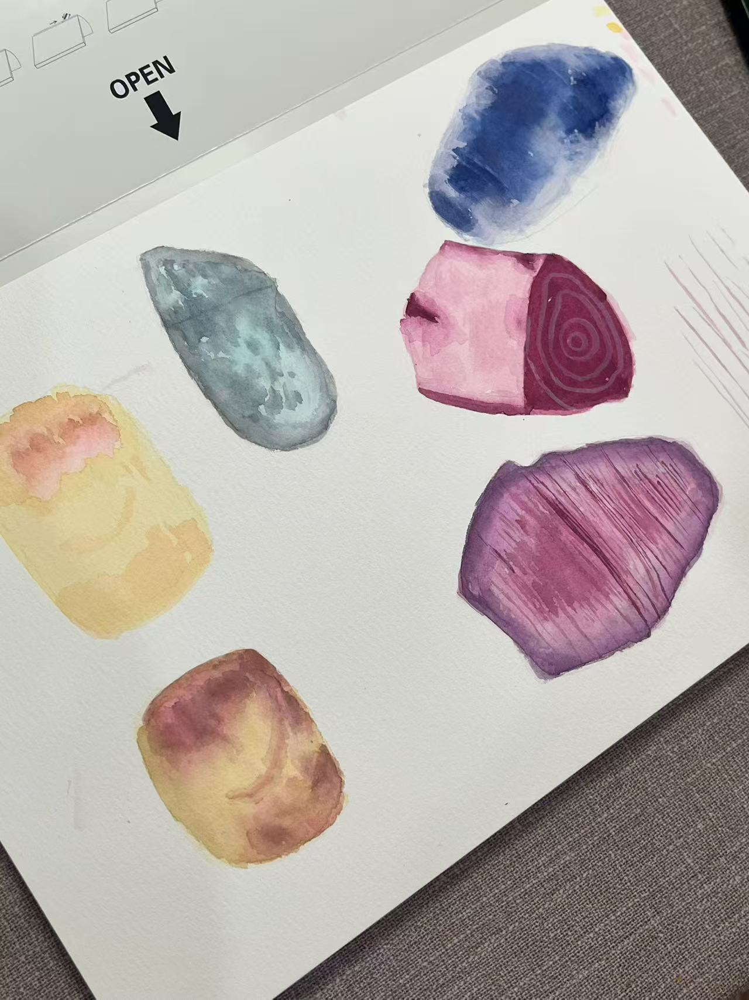
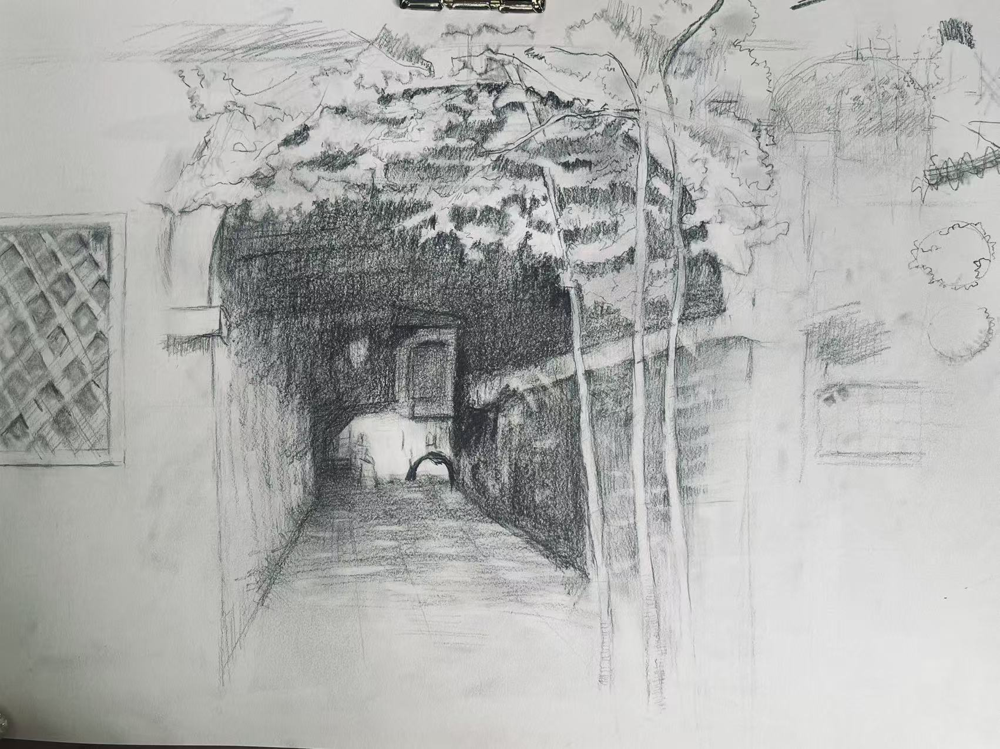
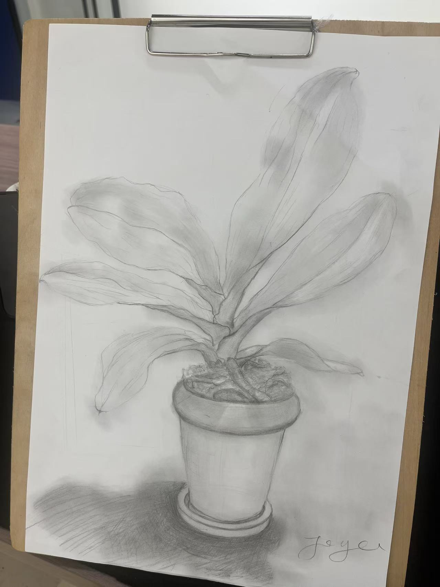

观察
蘑菇、种子、叶片与果蔬被反复拆解，说明她正在建立从对象特征进入画面的基本路径。

她从素描入门进入水彩与观察训练，在植物、街巷、果蔬和自然形态中练习线条、明度与色彩关系。
Joyce 当前可见的成长集中在基础观察：从单个对象的轮廓进入线条密度、明暗层次与色彩差异。
蘑菇、种子、叶片与果蔬被反复拆解，说明她正在建立从对象特征进入画面的基本路径。
平行线、弧线与轮廓线开始承担体积和表面方向，线不再只是边界，也参与形体组织。
街巷素描中的深浅关系与水彩练习中的冷暖差异，构成她从素描走向色彩观察的连接。
三张个人作品呈现 Joyce 当前对空间、植物形态与色彩关系的观察。


KART 保存基础训练，不是为了把练习包装成成熟作品，而是让观看方法的形成过程可见。
基础训练真正留下的，不是画过多少对象，而是开始知道如何看见形、明暗、空间与颜色。
Joyce 的现阶段档案仍然克制：它不急着宣告一个完整方向，而是保存几条已经出现的线索。街巷空间中的深色入口、植物素描里的叶片方向、水彩色块之间的冷暖差异，都说明观察正在从“看见对象”走向“辨认关系”。